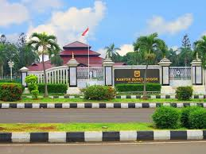
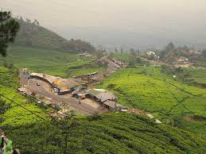
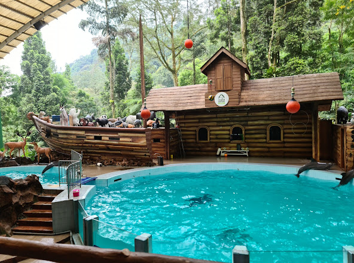
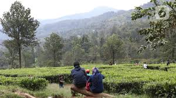
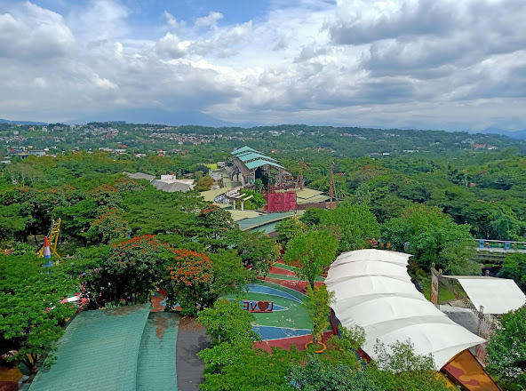

Sejarah

Awal berdirinya Kabupaten Bogor ditetapkan pada tanggal 3 Juni yang bertepatan dengan pelantikan Raja Pajajaran terkenal yaitu Sri Baduga Maharaja. Pelantikan yang disebut sebagai upacara "kedabhakti" itu dilaksanakan selama sembilan hari.
Terdapat beberapa versi terkait asal usul nama Bogor. Versi pertama, kata Bogor berasal dari kata "Buitenzorg" yang merupakan sebuah nama resmi dari penjajah Belanda. Versi kedua, kata Bogor berasal dari kata "Bahai" berarti sapi dan dengan kebetulan terdapat patung sapi di Kebun Raya Bogor. Sedangkan pada versi ketiga, bahwa Bogor berasal dari kata "Bokor" berarti tunggal pohon enau (kawung). Dalam versi lain, nama Bogor terdapat dalam sebuah dokumen pada tanggal 7 April 1952, tertulis "Hoofd Van de Negorij Bogor" berarti Kepala Kampung Bogor. Dari yang terdapat pada informasi, Kampung Bogor terletak di dalam lokasi Kebun Raya Bogor yang saat itu mulai dibangun pada tahun 1817.
Cikal bakal adanya masyarakat Kabupaten Bogor adalah dari penggabungan sembilan kelompok pemukiman oleh Gubernur Jendral Baron Van Inhof pada tahun 1745. Hal ini lah yang menjadikan sebuah kesatuan masyarakat dan berkembang menjadi besar di waktu kemudian. Kesatuan tersebut lah yang menjadi inti masyarakat Kabupaten Bogor.
Pada awalnya, pusat pemerintahan Bogor terdapat di wilayah Kota Bogor yaitu di Panaragan. Dan kemudian berdasarkan Peraturan Pemerintah Nomer 6 Tahun 1982, pusat pemerintahan Kabupaten Bogor dipindahkan dan ditetapkan di Cibinong. Sejak tahun 1990, pusat pemerintahan mulai menempati Kantor Pemerintahan di Cibinong.
Geografis

Secara koordinat, wilayah Kabupaten Bogor berada diantara 6º18’0″ – 6º47’10” LS dan 106º23’45” – 107º13’30” BT, dengan wilayah yang memiliki luas sebesar ± 298.838,304 Ha. Memiliki batas-batas wilayah administrasi sebagai berikut.
| Utara |
Kota Depok, Kabupaten dan Kota Bekasi, Kota Tangerang Selatan, Kabupaten Tangerang. |
| Timur |
Kabupaten Cianjur, Kabupaten Karawang dan Kabupaten Purwakarta. |
| Tengah |
Kota Bogor. |
| Selatan |
Kabupaten Cianjur dan Kabupaten Sukabumi. |
| Barat |
Kabupaten Lebak. |
Secara Topografi, Kabupaten Bogor memiliki topografi wilayah yang bervariasi, dari dataran relatif rendah di bagian utara hingga dataran tinggi di bagian selatan. Dataran tersebut dapat dikelompokkan berdasarkan ketinggiannya seperti sekitar 29,28% pada ketinggian 15 - 100 meter di atas permukaan laut (dpl), 42,62% pada ketinggian 100 - 500 meter dpl, 19,53% pada ketinggian 500 - 1.000 meter dpl, 8,43% pada ketinggian 1.000 - 2.000 meter dpl dan 0,22% pada ketinggian 2.000 – 2.500 meter dpl. Kondisi morfologi wilayah Kabupaten Bogor sebagian besar merupakan dataran tinggi, perbukitan dan pegunungan dengan batuan penyusunnya didominasi oleh hasil letusan gunung, yang terdiri dari andesit, tufa dan basalt.
Secara klimatologis, Kabupaten Bogor memiliki wilayah yang beriklim tropis sangat basah di bagian selatan dan beriklim tropis basah di bagian timur dengan curah hujan tahunannya yang rata-rata sekitar 2.500-5.000 mm/tahun. Serta, memiliki curah hujan yang kurang dari 2.500 mm/tahun pada bagian wilayah utara dan sebagian kecil wilayah bagian timur. Suhu rata-rata wilayah pada Kabupaten Bogor sekitar 20°- 30°C, dengan suhu rata-rata tahunannya 25°C. Wilayah Kabupaten Bogor memiliki kelembapan udara 70% dengan kecepatan angin cukup rendah yaitu rata-rata 1,2 m/s dengan evaporasi pada daerah terbuka rata-rata 146,2 mm/bulan.
Secara hidrologis, wilayah pada Kabupaten Bogor terdapat 32 jaringan irigasi pemerintah, 900 jaringan irigasi pedesaan, 95 situ dan 201 mata air. Wilayah tersebut juga terbagi ke dalam 8 buah Daerah Aliran Sungai (DAS), yaitu :
- Daerah Aliran Sungai (DAS) Cidurian.
- Daerah Aliran Sungai (DAS) Cimanceuri.
- Daerah Aliran Sungai (DAS) Cisadane.
- Daerah Aliran Sungai (DAS) Ciliwung.
- Daerah Aliran Sungai (DAS) Cileungsi.
- Daerah Aliran Sungai (DAS) Cikarang.
- Daerah Aliran Sungai (DAS) Cibeet.
- Daerah Aliran Sungai (DAS) Ciberang.
Pada wilayah Kabupaten Bogor, struktur penggunaan lahan dapat dikelompokkan menjadi beberapa kelompok, sebagai berikut.
- Sawah irigasi (tadah hujan) seluas 69.959,37 ha (22,89%),
- kebun campuran seluas 62.965,17 ha (21,07%),
- semak belukar seluas 52.575,49 ha (17,20%),
- hutan seluas 40.576,7 ha (13,58%),
- permukiman seluas 40.790 ha (13,35%),
- ladang (tegalan) seluas 33.815 ha (11,06%),
- selebihnya berupa badan air dan rawa.
Wisata
Kabupaten Bogor memiliki banyak wisata dan terdapat 3 wisata paling banyak peminatnya, sebagai berikut.
Taman Safari Indonesia Bogor

Taman Safari Bogor merupakan sebuah Pusat Konservasi kelas dunia yang dinobatkan sebagai situs konservasi terbaik oleh Kementerian Kehutanan Indonesia. Wisata tersebut terletak di Kabupaten Bogor - Cisarua, Jawa Barat
Puncak Bogor

Sebuah taman wisata pegunungan yang memiliki keindahan alam yang sangat cantik dan suhu yang sejuk. Wisata ini terletak di wilayah Kabupaten Bogor dan Kabupaten Cianjur, Provinsi Jawa Barat.
JungleLand Adventure Theme Park

Sebuah taman hiburan dengan wahana klasik. Terletak di kawasan Sentul Nirwana - Sentul City – Bogor yang dapat dicapai dengan menggunakan kendaraan pribadi maupun umum. Wisata ini memiliki keunggulan seperti akses yang mudah dicapai dari mana saja karena terletak di kawasan bebas macet. Dan juga menyediakan berbagai wahana unggulan yang pastinya bisa dinikmati oleh segala usia.